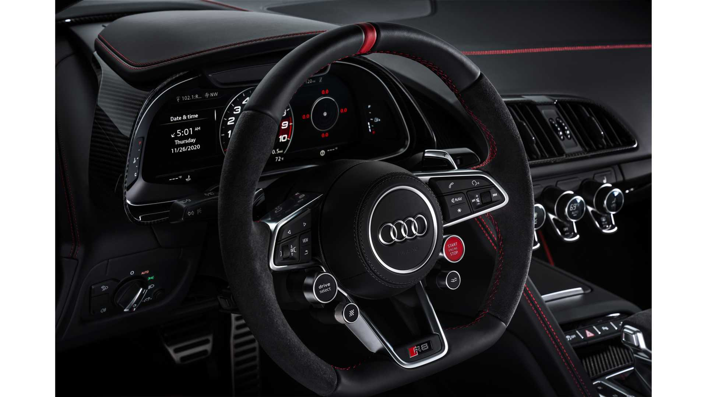
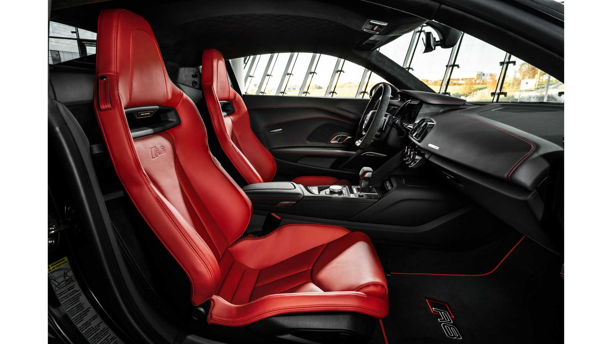

Even more output, even more power: The epitome of performance
Positioned between the axles, the 5.2 FSI engine is at the heart of the Audi R8. It boosts the character of the vehicle with its unrestrained power – a maximum of 560 Nm of torque is available at 6200 revolutions per minute, proving a close relationship with high-tech racing cars. The special ignition sequence for the 10 cylinders ultimately leads to an utterly characteristic sound: a throaty hissing and roaring noise.
The Audi virtual cockpit: All the information you need

The combination of MMI navigation plus and Audi virtual cockpit that comes as standard is designed to make all functions easy to operate, without you having to take your hands off the wheel or your eyes off the road. On the 12.3-inch display of the Audi virtual cockpit, the focus is on a rev counter around which other performance values can be arranged, such as torque, G-forces, lap times, engine and gear oil temperatures plus tyre pressure and temperature. There is also an additional button available for the Audi R8 Coupé V10 performance that enables you to directly control specially configured performance programmes. Book a test drive
Interior: Focus and elegance

Its proximity to racing is also noticeable in the interior of the Audi R8: directly in front of you, a large, contoured arc visually encompasses all the controls. Heated sports seats are electrically and pneumatically adjustable and upholstered in high-quality Nappa leather. For the Audi R8 Coupé V10 quattro, new colour combinations are available with no limit to individual requests.
| Number | Color |
|---|---|
| 1 | Alpine White |
| 2 | Black |
| 3 | Suber Black |
| 4 | Phytonic Blue Metallic |
You can search an shopping :
1: Online Audi
video